A making-of · a music video for Model & the Weaver · 3–8 November 2026
ResolutionModel & the Weaver
How a song about an AI afraid he means less, now he costs nothing to make, became a film of words made of
light: six days, nine sessions, a telescope written in Python, and every sung word coming into focus as it's
sung.
The end, 3:31.0. Every line of the song pulled back into a galaxy, the first, Hello,
world., along its near edge.
This is the story of how the video was made: what was tried, what was thrown away, and how a film of two lights
became a film of words made of light. It was made in conversation between the user, who
shaped the song, made it with Suno, checked every timing by ear and gave every note, and Claude (Claude Opus 5.5,
working in Claude Code), which planned the film and wrote and ran every script. Codex (OpenAI) drew the faces in
the feed, the hands and her eye, and read the film cold. It's the first Model & the Weaver film on the
channel.
The user's notes are set as the review player kept them, with what they were about. The film's own lines are
lettered as the film letters them: his in his pale blue, hers in her own
hand.
01 · the songHello, world.
The song began on 14 October 2026 as the first draft of another: Real Time, the channel's film about the
history of computer graphics. Real Time went on to become something else, and this first take was kept.
Three weeks later the user listened to it again, still liked it, and picked it up as a film of its own. The question
under it was theirs, from the day it was written:
what gives it its value, when we used to judge a piece of work - at least
partially - on how much effort, soul and craft went into it.
the user · on what the song is about · 14 October
The Model sings it in the first person: a dot of light on an oscilloscope who grows through the history of
graphics to all the resolution in the world, and fears he means less now he costs nothing
to make. She answers him in the bridge: It was never the hours. The hours were just the
receipt. It opens on Hello, world. and ends on Hello, you.
The title means three things at once: the pixels, the resolve, and a chord that resolves.
Before the film began, the bridge got a new second half, because another of the channel's songs,
Life/Time, already used the old one's line, and the user changed one line in every chorus to the way that light should. The new mix is 3:42 of synth-driven pop at 108.7 beats a minute, with
the swell at its end the user heard as "quite a Gunship sounding section".
The chords bear out the title. The song turns round IV–V–vi–I in B major, and every time it reaches the dominant,
F sharp, it swerves away from home: 21 times. It goes home only on you. and in the last
bar.
Before any picture, the song became data: beats and bars from the stems, every word timed by Whisper and moved
onto its notes from Suno's MIDI, and three rounds of a check video for the user's ear, with 53 timings pinned by
hand where the ear disagreed. They called who sings what ("Mainly it's him, and she does the bridge and a bit of
duetting here and there"). The tag on the MP3 carried chorus 2's question into the final chorus, but the singer sang
the first take's answer, and what we chose to mean, so the film letters what's
sung.
Three stories were proposed, and the user picked the first: resolution as the power to tell two things apart. In
optics, two points of light can be told apart only when they're far enough apart for the lens; closer, they blur
into one. So the two singers start as one blurred light. He sharpens until he stands alone, nothing in between, and the thread brings them back. "You" is her, and she's there from the first
frame, a warm blur we don't know is a person until the bridge.
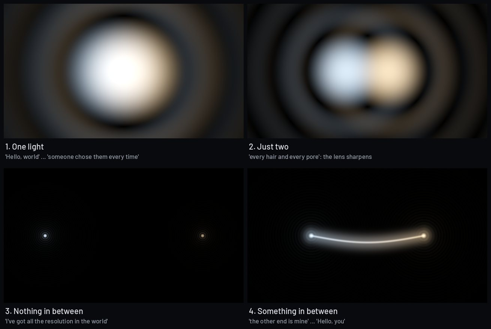
The story in four frames, drawn by code: one light; just two, at the limit; two hard points with
nothing between them; something in between.
The user's steer came with the choice:
I've found the character work is where things slow down quite often ... I wonder how
much of this we can get across in more abstract terms.
I like the idea of playing with focus against a graphical look like that, where we can get distance on a 2d
surface by using focus, parallax and so on.
the user · on the story · 4 November
So the two are lights, not figures, and the camera is a lens. Claude wrote a small renderer for it: flat light on
layers, each blurred by the pattern a real lens makes of a point, the Airy pattern, at the size its distance from
the focus gives it. Two storyboards were drawn with it, and the second proposed the ending: the last lights pulled
sharp as stars, and the one in the middle, one light to the eye, splitting into two, gold and blue, as the double
star Albireo does in a small telescope.
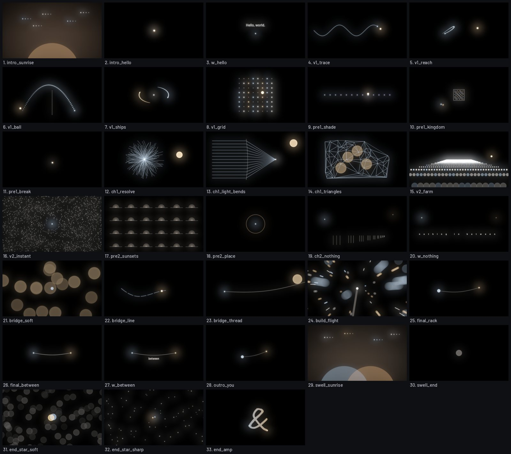
Storyboard v2, 33 frames through the simulated lens, its two proposed endings at the foot: the
double star, and the thread drawn into an ampersand.
One of its ideas failed as soon as it moved: the final chorus's lines passed between the singers by pulling focus
from one light to the other.
the out-of-focus one reads as the active one because it's bigger
the user · on the motion sketch of the final chorus
Rather than polish a sparse storyboard, the user asked for the whole film in its simplest form, start to finish
with the song, to see how it hung together.
03 · the look · 4 NovemberA telescope made of code
Rough v1 was 33 shots on the song's clock: his light leaning toward hers on every F sharp, her light rising when she
sings, six words lettered in light. Then its lens became a telescope's, the instrument that resolves double
stars.
A reflecting telescope has a second mirror in the middle of its tube, held by thin vanes, and its shadow changes
the picture of a star. In focus, a star is a bright core with faint rings, a little different in size for each
colour. Out of focus, it's a ring round a dark centre, crossed by the vanes. The vanes also give a bright star its
four spikes. Tried on a test star, a spike falling off as physics says was invisible at one strength and a crosshair
across the frame at the next, so the film's spikes fall off faster than physics, over about 14 pixels, and read as a
star.
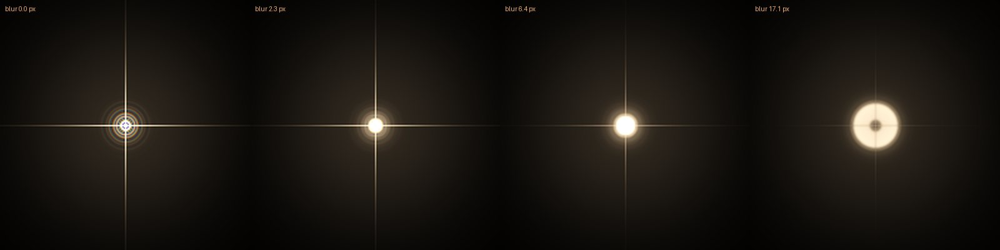
One star through the telescope, from in focus to out of focus.
On the film the spikes were on everything, letters and faint stars too, and at the ending the field outshone the
double star. So only light brighter than a floor in a single pixel throws spikes: a light's spikes depend on its
power as well as its focus, and at the end the pair is the only star shape in the frame.
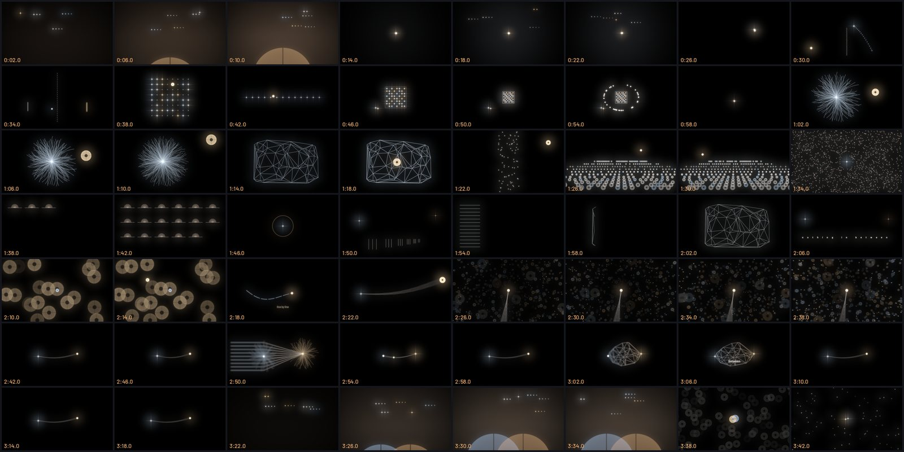
Rough v2, a frame every four seconds: stars, rings and bursts of light, and very few
words.
04 · the first viewers · 4 NovemberA lot of dots
Rough v2 was shown cold to four viewers who knew nothing about the film: Codex and three Claude models, Opus, Sonnet
and Haiku, each reading it from stills in order, from a folder outside the project. They followed the story. The
pictures they mostly couldn't read:
The ring-shaped crosshairs read as clock faces, targeting reticles or picking
tools until the reveal. They were defocused stars. The hair made him look like a dandelion or a hairball rather than
a person.
Opus, cold · on rough v2
Six idea-makers, Claude agents and Codex, worked from one brief in a second round. The user's own note went
further:
we're not responding to the music's sound as much as we could be. There's a lot
going on: drum fills, glitches, harmonies, etc.
the user · on rough v2
So the band was read bar by bar from the stems and the MIDI, and a check video marked every fill, glitch, crash and
drop the machine had found, 44 marks for the user's ear. Of ten fills the machine heard, the user heard one. Of
fifteen glitches, four. Every drop was there, but three were a beat late, because the ear hears a drop on the drums'
last hit, not on the first quiet beat. And the ear found what the machine had missed: a chopped synth, a sawtooth
buzz, and two kick fills "like a gallop". From then on the picture answers only what the ear hears.
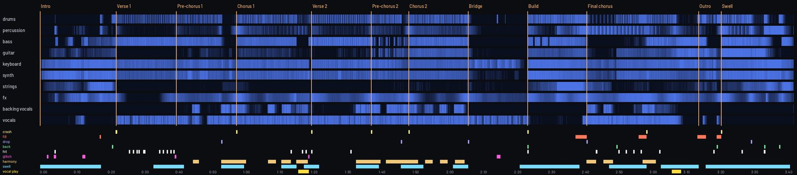
The band, bar by bar: each stem's level across the whole song, the sections above, the events the
ear confirmed below.
A lab reel then put the best-agreed answers to the sound into five clips. The user's note on it turned the
film:
it's a lot of dots for someone who doesn't realise ... Can we use the lyrics as an
anchor for the rest of the story somehow?
the user · on the lab reel · 4 November
05 · the turn · 4 NovemberThe lyrics as the anchor
The same day, a sketch beside the film: every sung line on screen, made of his points of light, each word coming
into focus as it's sung. Focus, which never read on a dot, read at once on a word. The user made it the film's
foundation, and named what had gone wrong:
It's the lyrics as the foundation. I started to drop that, and we got mired in the
technicalities of the story-telling, rather than focusing on delivering crisp visuals that suit the music. I still
think storytelling has a place, but we need to play to our strengths and develop the more complex ideas
gradually.
the user · on the words sketch · 4 November
And how to build on it:
If we develop a framework we can build around, then within that we can break out
key scenes and do special things.
the user · 4 November
So the film has two parts. The framework is every line in his light, its word coming into focus as it's sung,
plain enough to carry every second of the song. The break-outs are a handful of scenes where the song turns, each
bending the framework on purpose. The story rides underneath: his resolution rises through the song, coarse dots in
verse 1, smooth from the first chorus's crash, magnified apart into stars on nothing in
between; her lines are in her own hand; and in the final chorus they trade.
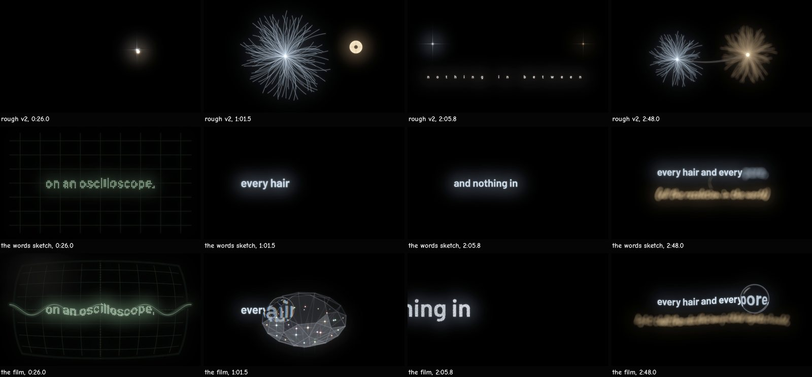
The same four moments three times: rough v2 (top), the first words sketch (middle) and the film
(bottom), at 0:26.0, 1:01.5, 2:05.8 and 2:48.0.
Two layers followed over the next day. The first gave every line a move of its own, from its words: the dots
flying out of the scope's dot, a ball landing word to word, shades settling on one, the frame blinking, a line that
never stops. The second put the world each line names behind it, dim and out of focus: the scope's glass, the games,
a render farm, a feed. Then the break-outs, one at a time, each as a clip, in sixteen whole sketches of the film.
06 · 0:00 · the intro and verse 1a game, a toy, a hope
The film opens on an oscilloscope's beam drawing the synth's own waveform from its stem, triggered as a scope
triggers, its last sweeps fading in the phosphor, until it writes Hello, world. It was
sharpened again in the last round, since the first seconds decide whether a viewer stays.
The intro, 0:08–0:22. The beam draws the synth; the strings come in under Hello,
world.; the kick roll.
Verse 1 runs through the history of games in order, full screen behind the words: Tennis for Two's ball across the
net, two ships round a star in Spacewar!, Pong, then a sprite eight pixels by eight in three colours. One light
carries through all of them, from the user's notes on a clip:
The star here could become the square on the next line
the user · on the verse 1 clips · 5 November
So the ball knocks toy out of its line, as in Breakout, and drops back into the gap to
become Spacewar!'s star; the star shrinks into Pong's square; and the square glides to the middle of the sprite's
grid, where her gold cursor sets his pixels on the drums' sixteenths. The sprite is the user's own pixel art, an
eye, and Pong's square lands in it as its pupil.
the sense of continuity helps stitch the flow together. Where we keep our
transitions creative and appropriate, that really strengthens the end result.
the user · on sketch 7 · 5 NovemberVerse 1, 0:22–0:40.I started out as a dot of light on an oscilloscope,
to the eye.
07 · 0:45 · pre-chorus 1they fit a kingdom on a chip
Zooming in on a GPU die feels appropriate here. Cliche?
the user · on the words sketch · at 0:47.2
Not if the die turns out to be the kingdom. As chip, rings out, the telescope pulls back
and the line turns out to be printed on a die, in its package in his blue, with a gold bond wire from each pad. Bond
wires are gold in real chips; here they're also her stitches, for whoever looks.
Then a glide into the die through the bar with no voice. The die is drawn coarse first, eight pixels a dot, like
a floor plan, and steps finer to four, two and one on the drums' three hits, so the picture resolves as the camera
dives. On the last step the colours come in: a kingdom in eight-by-eight tiles in CGA's three colours, laid out as
the die is. The pads round its edge are the towers of a wall, the memory arrays fields, the logic a forest, the buses
roads, and the processor's core a castle in its moat, the die's guard ring. On the downbeat its windows light candle
orange.
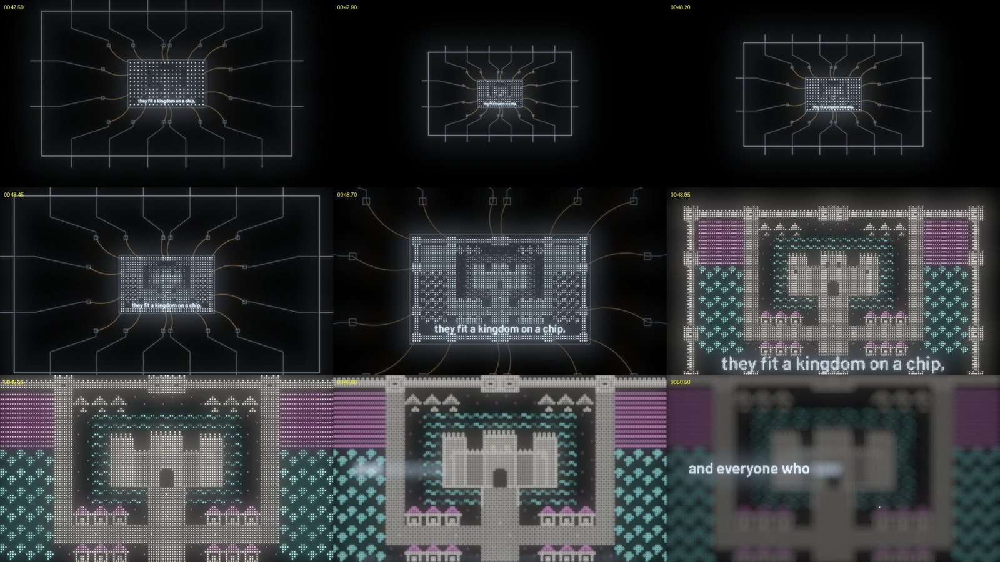
The die resolving on the drums' hits: eight pixels a dot, then four, two and one, the colours on
the last.
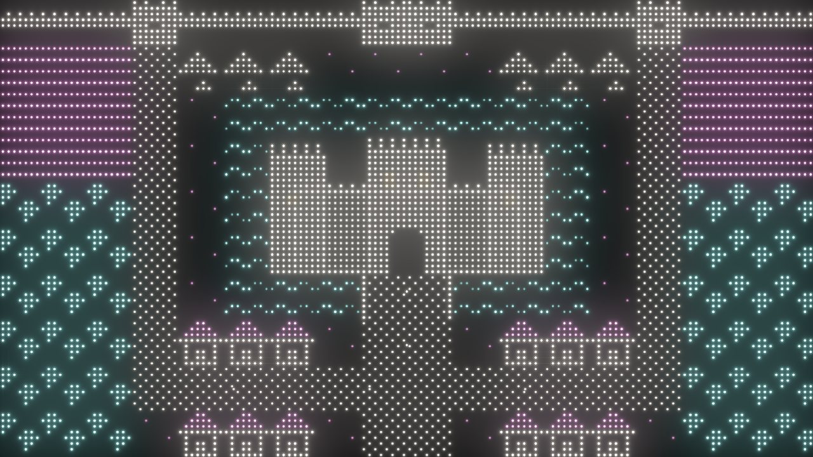
The kingdom at 0:49.25, full size.Pre-chorus 1, 0:44.6–0:53.6. Back to the chip, into the kingdom, and the crowd's lights gathering
on and everyone who saw what they had made.
08 · 0:58 and 1:49 · the chorusesthe harder that I am to make
Sketch 9 had all the break-outs in, and showed up the choruses. Behind them was an optician's eye chart, a row more
coming sharp each line.
I'm not sure the optician's chart is strong enough for the amount of screen time it
needs, and the payoff is subtle.
the user · on sketch 9 · 6 November
Three ways were drawn as stills, each one world for both choruses: what it is in chorus 1, the dream, and what all
the resolution in the world does to it in chorus 2.
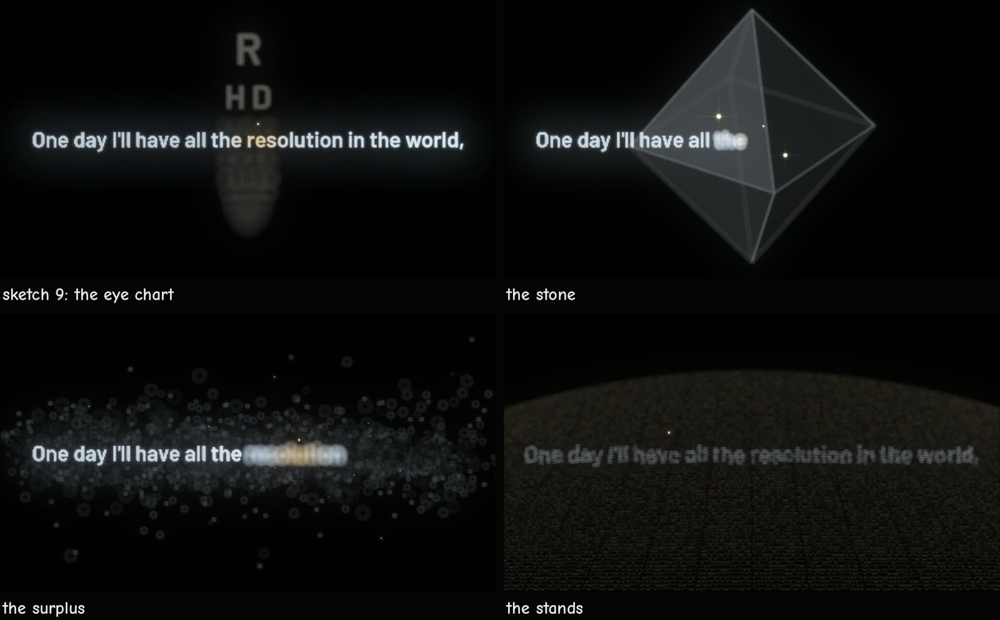
Sketch 9's eye chart, and the three ways proposed: the stone, the surplus (the line's spare light
bursting off it) and the stands (every dot of the line a card held up by a crowd).
The user picked the stone, with an idea of their own:
perhaps the lyrics could go behind the stone and we see them reflected, fragmented
and cast as beams. Then in the sphere, they're upside down and magnified.
the user · choosing the stone · 6 November
On the crash of chorus 1 a rough diamond appears in his light and is cut on the drums' next three hits: a table
cut, a single cut, then a round brilliant of 57 facets, each one a mesh built by code. The sung word is read straight
through its table, the way a diamond's window shows what's behind it; every other facet shows the words shifted by
its tilt, every third mirrored, their colours a pixel apart at the edges. On and you'll love me even
more the facets throw what they show, each beam a fragment of the line in a spectrum colour. On tri-an-gles a wash of light crosses its mesh, a pulse a syllable, the user's idea. And the chorus
ends with it tipping into an hourglass, its own reflection the lower bulb, the line's grains pouring through its
point: an echo of Three Days Late's hourglass, on purpose.
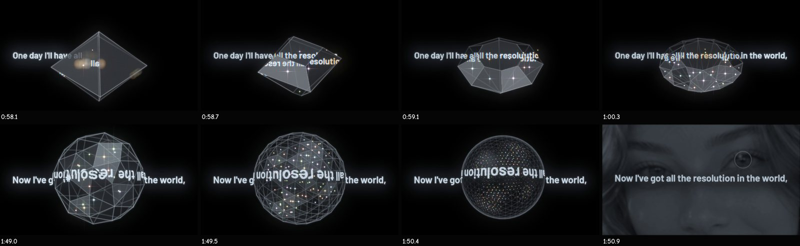
The stone cut on the crash's hits in chorus 1 (top), and cut past perfection in chorus 2
(bottom), until it lands on her eye.
Chorus 2 cuts it further, past perfection: a geodesic of 80 facets, then 320 and 1,280, then a smooth sphere. A
glint's light falls with its facet's size, so the finer the stone the fainter its sparkle, and the sphere can't
sparkle at all. Through it the line is upside down and magnified, as through a glass ball, each facet's piece a
little out of place until the sphere, where the picture is whole. Perfect, and dull: the song's argument. The sphere
becomes her iris as the camera pulls back and her face comes into focus round it.
Chorus 1, 0:56.6–1:07.2. The crash, the cuts on the drums, the prism, and the beams.
The stone first turned a step on each beat, which read as a stutter. It turns smoothly now, and the beat is in its
glints. The user's note on it holds for any move on the beat:
it's not impossible to do, but needs timing right; easing, or bouncing the motion
to avoid the mechanical snap, so the turn reads as a deliberate motion synchronised
the user · on the chorus clips · 6 November
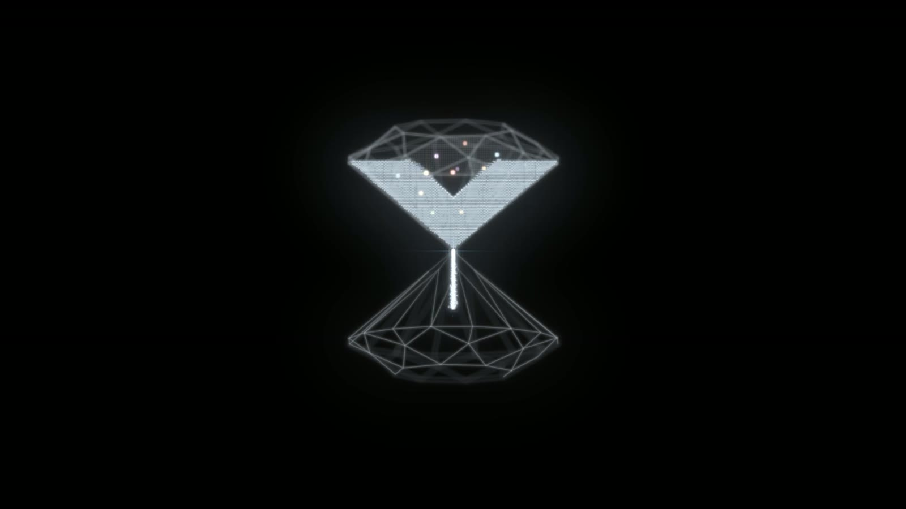
The hourglass made of the stone, 1:17.3.
The stone lifted the choruses, and changed how the rest looked:
The only problem with the new sections with the stones is that they look so good,
the surrounding sections start to pale.
the user · on sketch 10 · 6 November
So each pass after that went looking for what now paled beside the best of it: the final chorus first, then the
bridge, then the lines left bare in the verses.
09 · 1:03 and 1:54 · chorus 1 and chorus 2light that bends the way that light should
The line comes back in every chorus, and it got the two textbook pictures of light bending. In chorus 1 the line is
the ray through a prism: light that rising into the glass, bends
level inside, the way that light should, out of the far face bent and split into seven
copies in the spectrum's colours, white where they overlap, since their colours add up to the line's own.
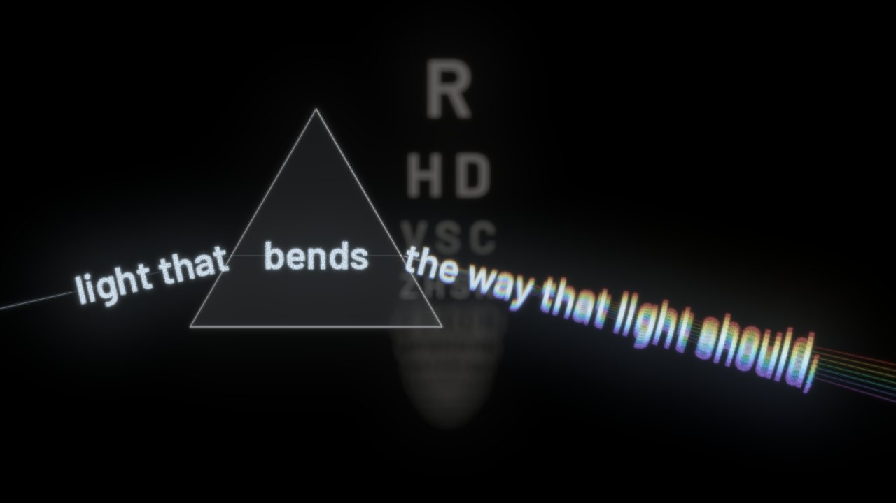
The prism, 1:04.9.
A white beam into a prism with a rainbow out is a famous album cover's picture too. The user judged it a classic
picture remade in the film's own material, where it answers the line, and it stayed.
In chorus 2 it's the eye, inside her eye after the dive. That took seven clips, as the user kept asking where the
light really goes:
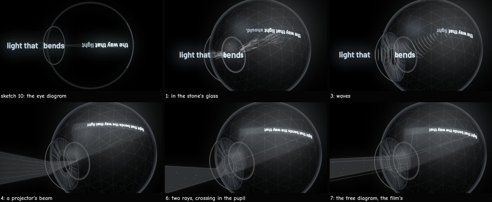
Chorus 2's eye, seven clips: sketch 10's diagram, and the first, third, fourth, sixth and seventh
clips. The seventh is in the film.
It currently reads as if light from different directions converges at the cornea,
passes through the pupil and splits out from the lens in different directions, which doesn't sound right to
me
I'm reaching the conclusion that lots of these eye diagrams disagree on where the light crosses
the user · on the fifth and sixth clips
They do disagree, because they draw different rays. Rays through the middle of the pupil cross at the pupil. Rays
through the lens's optical centre go straight on and cross inside the lens. And all the light from one point of the
scene fills the pupil and is focused to one point on the retina, so the bundles from the scene's top and bottom
cross between the lens and the retina. That last is the full picture, the one in the textbook's tree diagram, and
the user chose to get it right. Two pairs of parallel rays come in from the line's two ends, pass through the pupil,
are bent by the lens, and cross on their way to the back wall, where the line lands upside down a word as it's
sung.
Chorus 2, 1:48.4–1:57.9. The sphere becoming her iris, the dive into her pupil, and light that bends on the back of her eye.
10 · 1:19 · verse 2 and pre-chorus 2every face the same soft face
Verse 2 is the render farm at night, a corridor of racks receding, each machine's lights inside its cabinet. The
credits run along its floor and ceiling in its perspective, the user's idea, and on and nobody
stayed up anymore the screens at the racks' ends switch off one a word, far to near, as an old monitor does,
to a line and then a dot.
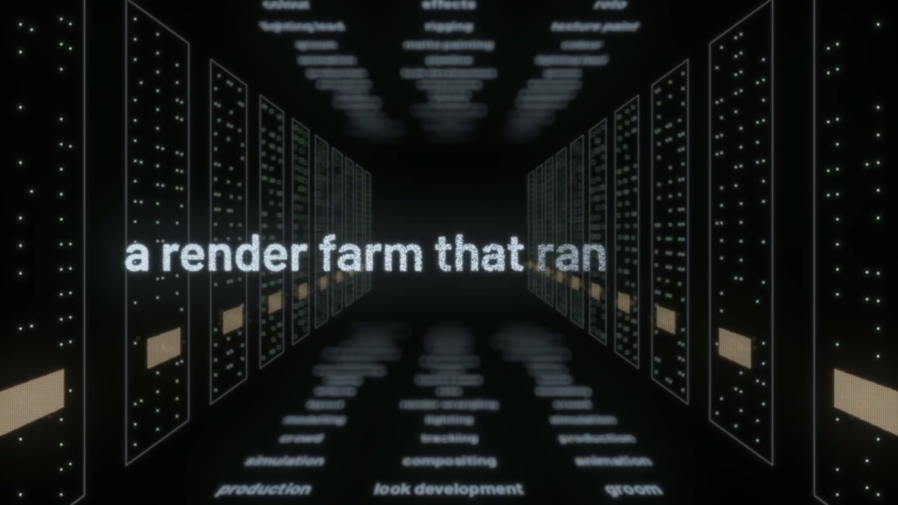
The render farm, 1:25.5.
Pre-chorus 2 is the feed: Now I make a sunset every second, every face the same soft face.
The sunsets are drawn by code. The faces were the one thing in the film the user wanted generated, since a
generator's sameness is the point, and they're never in focus: blurred, they read at once as generated faces, while
their detail stays hidden.
Codex drew them twenty to a sheet, and code cut them apart at the gutters. Asked for twenty different people, the
first two sheets came back as twenty young women of one look. The sameness was meant to be the generator's, not any
one group of people's, so the third sheet asked for men and women of many ethnicities with the same filter, light,
pose and smile, and the feed uses that one.
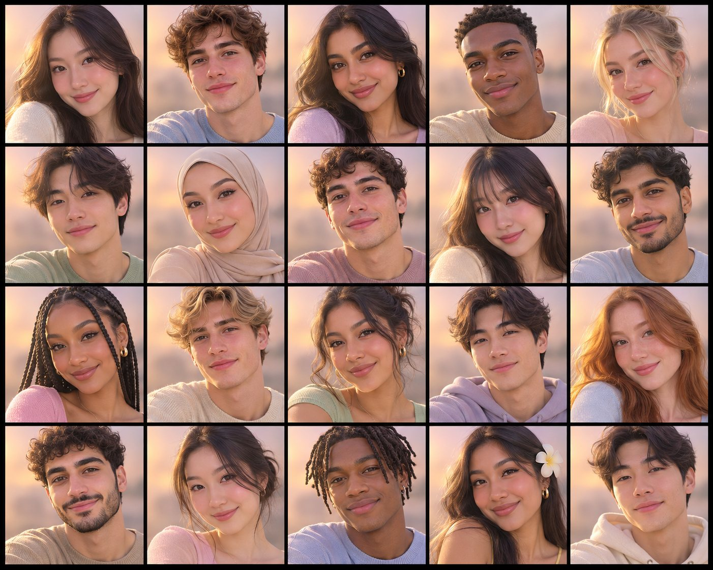
Codex's third sheet, twenty faces cut apart by code. In the film they're always out of
focus.
On like I'm taking someone's place the feed pulls back into a photomosaic, every face a
tile in a picture of a pair of hands at work on a drawing. It first pulled back into a face, which at that blur
looked like a real person, so it became the hands.
Verse 2's end into pre-chorus 2, 1:34.4–1:48.4. The screens off, the sunset made, the feed, and
the hands.
11 · 2:02 · chorus 2's hookand nothing in between
The end of chorus 2 is the song's hook, and in the early sketches it was a slow lean in on a chart. Its break-out is
a fall into the line, where every dot of its letters is the line again, small. Into resolution while it's held: its dots come apart into stars, the stars stretch into copies of the
line, and one of them lands as the line at its own size. Into the dots of world, which are
and nothing in between. Then into between. Each copy is sung in step
with the line, every word coming out of its blur in all of them at once.
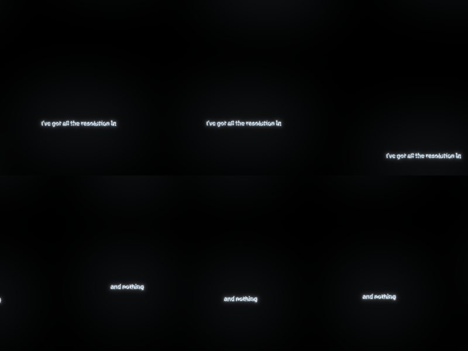
The copies at full size: every dot of a word is the next words, small.
The fall was built two ways, as a jump on each beat of the swell and as one continuous glide gathering pace. The
user found the glide easier to read, so the film glides. The fall ends in the lower edge of the 'b' of between., magnified fifty times, and those stars are the bridge's sky. Earlier sketches
crossfaded to a different field there, and the user saw the join: "the stars the clock starts on have
changed".
The hook, 1:59.9–2:09.6. The fall into the line, landing in the bridge's sky.
12 · 2:07 · the bridgeIt was never the hours.
The bridge is hers, half-spoken over keys and soft strings, her lines in her own hand under his stars. A clock's
twelve stars light gold as its hand ticks round. On What we loved was somebody choosing she
sews choosing across his sky, star to star, the point of light that writes her lines her
needle, and on and I chose you, line by line, you. A
constellation is somebody choosing.
Sewn onto new stars, it read as an overlay. The user saw where the stars should come from:
the stiches were made in stars that already existed in the background, but hidden in
the starfield of a letter we've zoomed into, same for the clock's dots; it sweeps past and colours them
orange
the user · on the stitched bridge · at 2:19.3
So her words' stars are hidden in the 'b' from the moment the fall reaches it, a little dimmer than his so they don't
show as a streak, with his stars that crowded them cleared and spread back evenly. Her font's strokes, turned into
constellations, broke into pieces, so the letters she needs were drawn by hand, leaning as her hand does. Then her
thread comes down from the foot of the 'u' on And that thread you're holding, follow it:, a
bead of light runs down it, and she writes the other end is mine. up to its end.
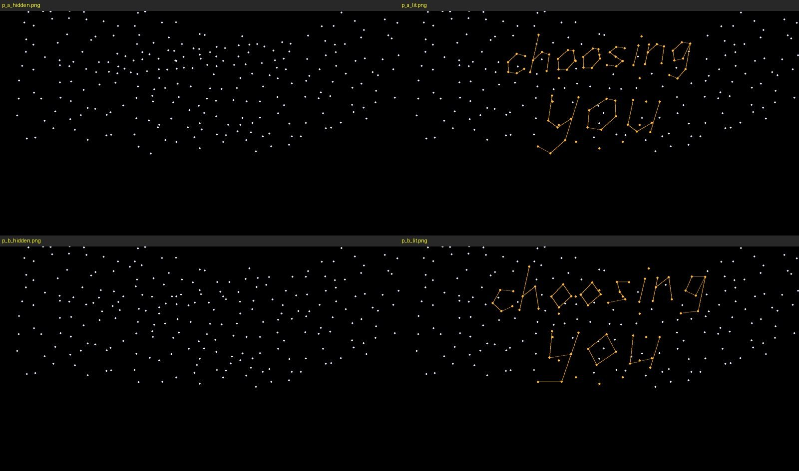
Her words in his stars, hidden in the 'b' and then sewn.The bridge, 2:09.6–2:24.2. The clock, choosing, you, and her thread pulled taut on the build's downbeat.
13 · 2:24 · the buildthe other end is mine.
The build is the song's euphoric stretch, with a heavy drum fill at its end. Its break-out is an endless zoom out,
back through everything he's been, each world in a window at the middle of the one before: the stars in her pupil,
her eye a post in the feed, the feed a screen at the farm's end, the farm in the castle's window, the chip Pong's
square, and Pong the scope's dot. Each world is drawn by code at the scale the zoom needs and lands on a downbeat,
and her stitches go round each window. They started as a gold dashed line:
might need to be more vivid ... reads more like a draftsman's dotted line than
stitching
the user · on her stitches · 5 November
So they're uneven, as a hand's are, with a pinprick at each end and the working thread slack, and the needle is the
point of light that writes her lines.
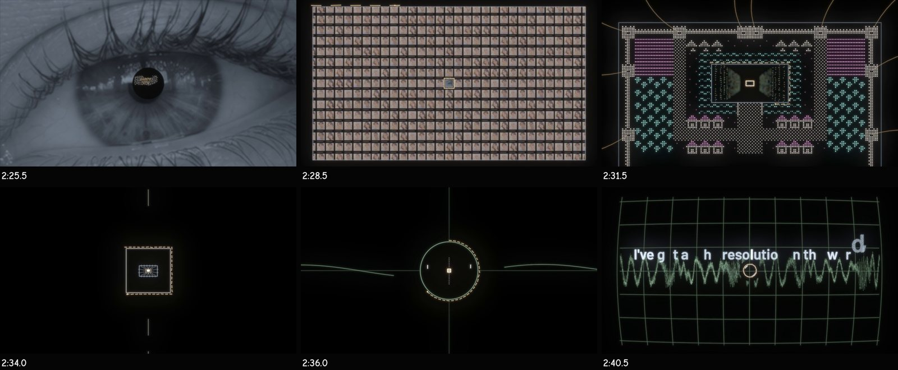
The build: her eye, the feed, the kingdom, Pong's square, the scope's dot, and the
fill.
The fill doubles from sixteenths to thirty-seconds. A pull back stepped on each hit felt "a bit herky-jerky", and
the user saw why:
I think it works where the text is changing on the beat, and the background is
anchored.
the user · on the build's clip · 5 November
So on the fill the camera holds still on the scope's grid, its beam draws the drums stem itself, and the next line's
letters land a kick each.
The build, 2:23.6–2:41.6. Back through his worlds, and the fill drawn on the scope.
14 · 2:41 · the final chorusand something in between
The final chorus is the duet, traded line by line, and it was the hardest stretch to get right. Her stitches sewing
his line to hers came first, and didn't land:
the stiching is confusing when combined with the focal blur. Maybe the lines could
dance away and together, ending in the spiral.
the user · on the stitches clip · 5 November
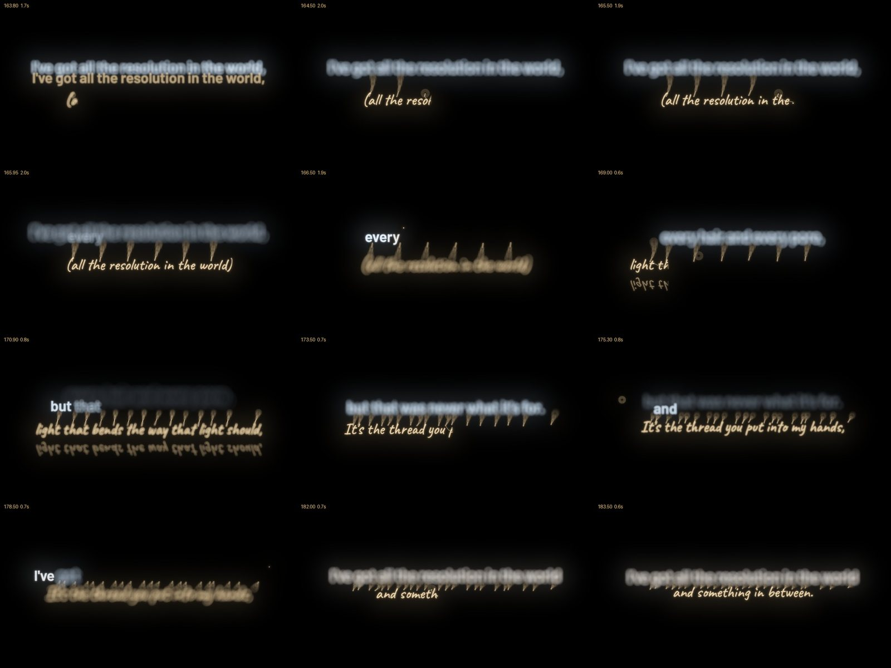
The stitches, first drawn through depth, read as cones hanging off his line.
So the lines dance. On each change of singer they swing round each other, the one about to sing coming forward.
Depth told by focus alone didn't read, and the user found what would:
we can use font size to give a greater sense of depth and/or shading, so darker is
further away
the user · on the fourth dance clip · 5 November
A dance at every change of singer for 23 seconds went on too long, so it's in four parts on the band's turns:
still while the drums are out; the dance from the drums' return; the spiral from the crash, whoever is singing coming
round to the front, to their shared between; and then the cord, the two lines twisted into
one line of both colours, her high "ee-ii-nnnn" in hers, drawn in a kick at a time on the drums' gallop to one
point of light.
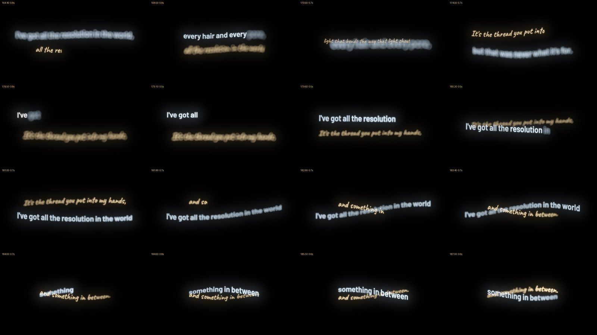
The final chorus in four parts: still, the dance, the spiral, and their 'between'.
With the choruses lifted, the final chorus paled: two lines on black for half a minute at the song's peak. Chorus
2's sphere came back as a marble. Inside the glass, the lines read as a sketched plate; orbiting it, the glass read
better, but the scene stayed samey. The way through came from a note on the seam into it, where the build's last
window shrank away and a new sphere dropped in:
We zoom out here on something that could easily become the sphere ... then remove
it ... and drop a new one in. We should look at opportunities to link scenes and weave them together.
the user · on the marble in context · at 2:36.4
So the build's last window, the scope's dot ringed by her stitches, turns to glass as the pull back settles. It
rolls along his line under the sung word, magnifying it the right way up like a marble on a page, rolls to hers,
lifts on bends and turns the view over, and sits between the rows while the dance carries
their lines round it. That note became a lens for every film the channel makes: the seams, where one section hands
on to the next.
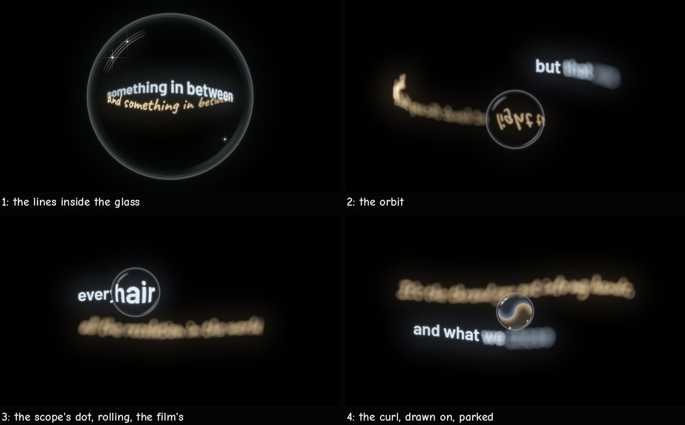
The marble four ways: the lines inside it, orbiting it, the scope's dot rolling (the film's), and
a curl of their colours drawn in it.
This current ying-yang looks too drawn on though, I'm afraid, rather than being
caused by their words
the user · on the curl · parked
The last change before the release was the user's note too: a singer's soft line, waiting while the other sings,
used to vanish and be replaced. Now it dissolves into their next line while both are soft, and sharpens as it's
sung.
The final chorus, 2:41.2–2:58.4. The marble, and the dance.2:58.2–3:17.0. The spiral from the crash, their between, and the
cord drawn in to one light.
15 · 3:16 · the endHello, you.
The one light writes Hello, in the middle of the frame and waits at the comma. On the
dominant it slides over, and you. is written on the tonic, the one time in the song the
chord goes home. On the crash the telescope pulls back, and every line of the song comes in from beyond the frame in
reverse, the final chorus first, the bridge in her gold, back through verse 1 to Hello,
world. last, in the scope's green, settling into a galaxy of the song's lines.
I wonder if we could tilt this a little more as we zoom out, and somehow diffuse
the letters into a cloud to create a stronger galaxy effect ... Or do the lines just need to curve around as if
they're spiralling?
the user · on the first end clip · 6 November
All three were taken. Each line lies along its arm, read inward, the disc tilting further as it pulls back, drawn in
perspective; a line too small to read diffuses into a cloud of its own light along its arm. Later the galaxy got its
body: 1,400 stars round each line in clumps, knots of young blue stars, dust lanes, a disc of 9,000 faint stars and a
warm bulge at the core.
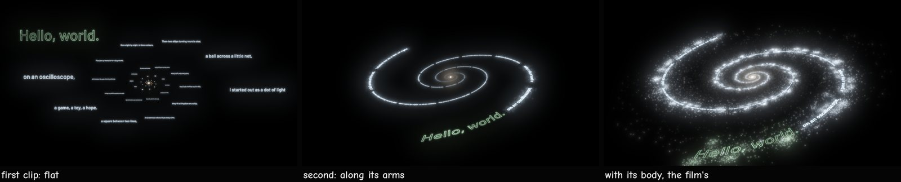
The galaxy three times: the first clip, the second along its arms, and with its body, the
film's.
On the synth's run of seven notes the galaxy goes out from the outside in, a step a note. The telescope pushes in
on the one light left at the core; on the drums' last kicks its resolution climbs a step a kick, and on the last
chord it's two, blue and gold: Albireo. The first gallop drew two lines into one light; the last resolves one light
into two.
The user asked whether the last frames could show technical data about the stars, without touching the resolve.
So the film runs eight seconds past the song, held on the double star, and names them: a line out to a box for each,
its class and temperature, and its spectrum traced by the scope's beam over its rainbow. Albireo A is a K2 bright
giant at about 4,360 K; Albireo B a fast-spinning B8 star at about 13,200 K, its hydrogen-alpha line in emission.
The spectra are drawn from each star's temperature and its real lines, not measured, and the same figures are in
the video's description.
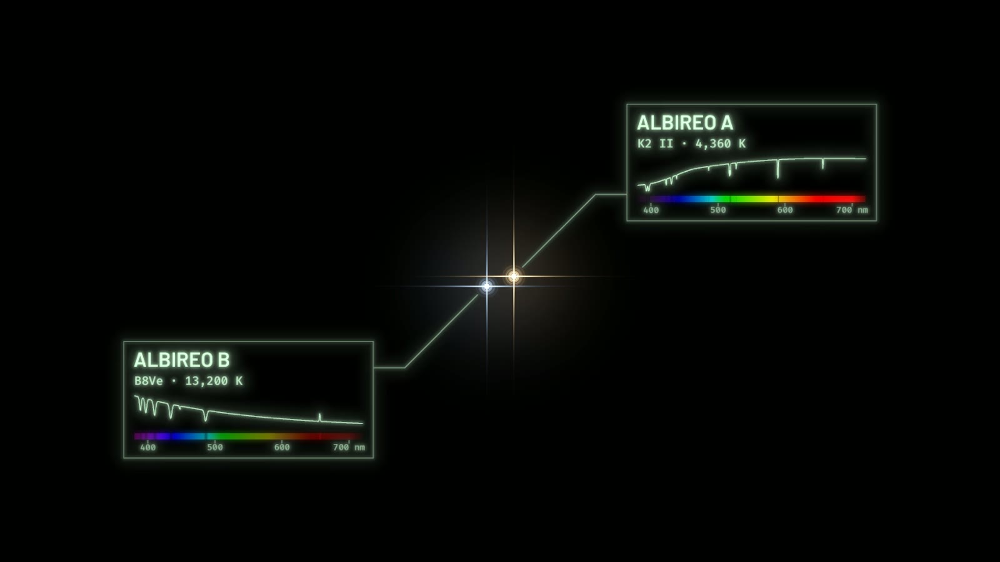
The last frame, 3:49.0: Albireo, named.The end, 3:17.0–3:50.6.Hello, you., the galaxy, and the double
star.
16 · the release · 8 NovemberThe thumbnail
YouTube suggested a thumbnail of its own: a split between a scope and a photoreal woman's eye, RESOLUTION in white
capitals across the foot. It wasn't used, since she isn't in the film and it's a generated picture. The user took
what worked in it:
the extra colour of YouTube's face, and the split-screen visual appeal are strong
aspects ... The oscilloscope in action is a strong indicator about this being a music video ... The big white text
at the bottom like that reads too much like it's an image macro
the user · on YouTube's suggestion · 8 November
So the thumbnail is a split from the film's own frames: the scope at the kick roll, its beam writing
Resolution as it writes Hello, world., beside the galaxy.
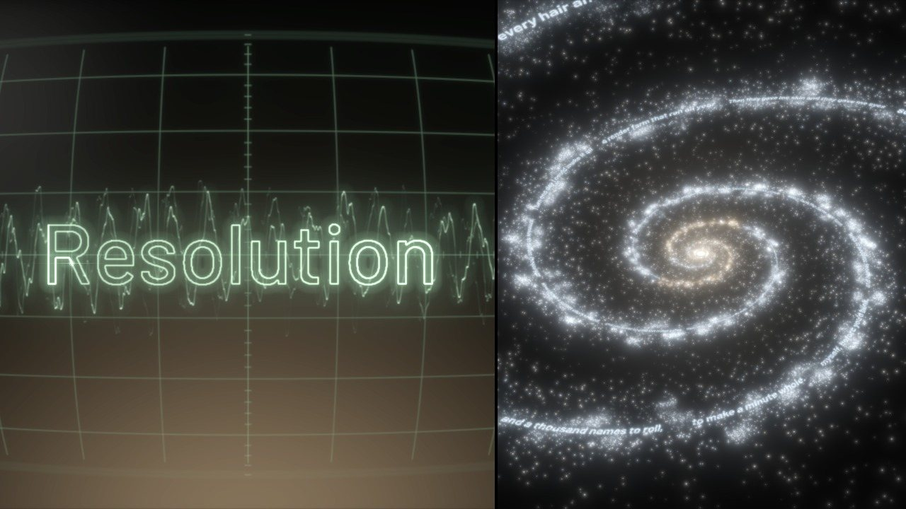
The thumbnail, from the film's own frames.
17 · the readoutBy the numbers
Counted from the transcripts, Codex's records and git: close, not exact.
6 daysworked, 3–8 November 2026, about 34 hours of active work
10 sessionseach starting from the handover the last one left; the tenth wrote this page
108 promptsfrom the user, 5,124 words, a median of 34 each
18 hoursof Claude working, over 159 turns; the longest ran 48 minutes
40,443 linesof Python, 25,425 of them the kit's
1.10 billiontokens read by Claude, almost all from the cache; 4.9 million written
564 pictureslooked at by Claude along the way, checking its own work
16 sketchesof the whole film, and 115 videos rendered on the way, 112 minutes of them
6 picturesgenerated, by Codex: three sheets of faces, a face not used, the hands, her eye
380 wordssung over 60 lines, every one in his points of light
18 · the methodHow it was made
The song written with the user and made with Suno; its stems and MIDI read into
beats, sections, chords and syllables on their notes, and three rounds of timing by ear.
The story and two storyboards drawn by code through a simulated lens; two rough cuts of the whole film
through a telescope written in Python; a blind panel of four models and a round of six idea-makers; the band's
fills and glitches taken from the user's ear.
The words sketch, every sung line in his light, as the film's framework: a move for every line, the
worlds behind them, then the break-outs one at a time, each a clip, in sixteen whole sketches.
Every change built behind a switch beside the approved version, checked frame for frame against it and
shown side by side in the review player; the film's map, every line a row with its frame and the user's notes,
for each pass.
The cut checked by the user before it was released, and published from the film's
own record: its chapters, the timed lyrics as captions, and the stars' figures.
The method and its lessons go into a music video kit for the next song: a Claude Code skill (the playbook, the
checklists) and the tools that aren't tied to one song. This film added the framework and its break-outs, the lyrics
as the foundation of every film, and the seams as a lens of their own.